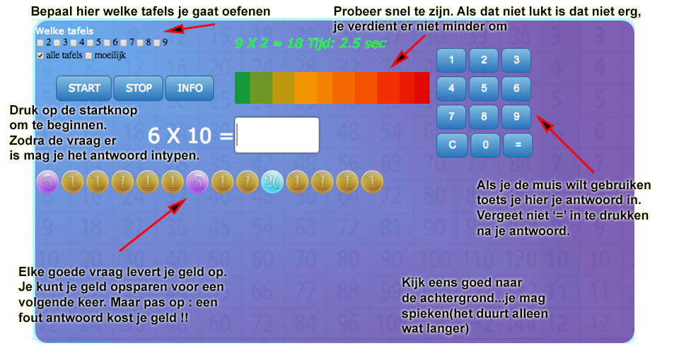
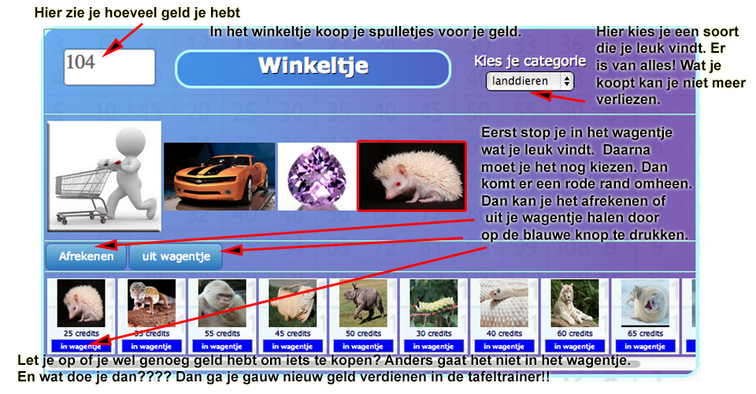
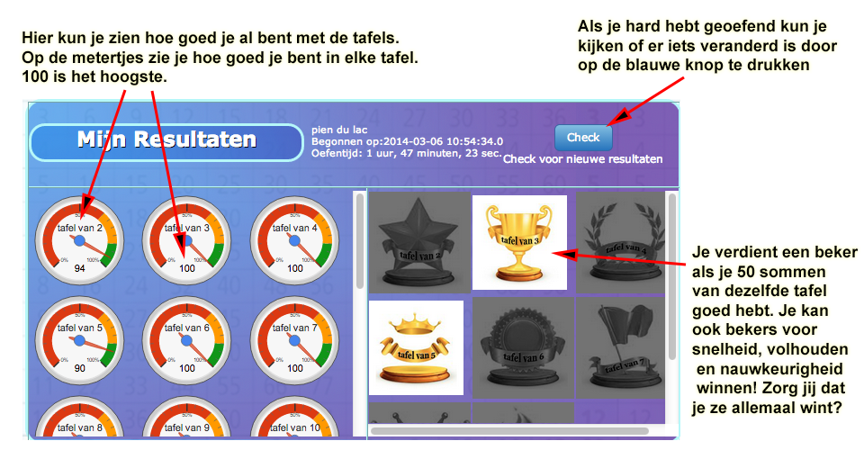

|  |  |  |
 |
Tafeltrainer is een programma dat leerkrachten en ouders als doelgroep heeft. Het biedt deze doelgroep uitgebreide mogelijkheden om leerlingen te laten oefenen en daarin tegelijkertijd de regie te behouden. Een veelgehoorde klacht is namelijk dat ouders en leerkrachten geen overzicht hebben over wat leerlingen verrichten aan schoolwerk op de computer. Gevolg is een daling van betrokkenheid van de begeleider naar het kind toe, waardoor het kind uiteindelijk motivatie verliest om leerresultaten te bereiken.
Binnen de leeromgeving moet het kind antwoorden geven op tafelsommen. Er kan per specifieke tafel geoefend worden, maar ook sommen door elkaar of moeilijker opgaven voor de gevorderde leerlingen. Door het geven van correcte antwoorden verdienen zij "geld". In een "winkeltje" kunnen zij dit geld uitgeven aan "producten" zoals auto's, huisdieren, edelstenen en dergelijke. Wanneer zij te weinig geld hebben voor een product zullen ze nog even extra moeten oefenen om het benodigde geld bij elkaar te sparen. Op een persoonlijke pagina zien de kinderen het geld dat zij hebben en de producten die bij elkaar zijn verdiend. Op een pagina met resultaten zien kinderen hoe goed zij de tafels beheersen. Zij verdienen een "beker" wanneer het systeem heeft besloten dat zij een tafel, of een ander onderwerp beheersen. Dit gebeurt op basis van algemene criteria zoals bijv 90% beheersingsgraad bij een minimum van 50 sommen. Naast de "awards" kunnen kinderen op metertjes aflezen hoe goed zij zijn in elke tafel. De leeromgeving is beperkt tot 4 schermen waardoor zij makkelijk het overzicht behouden. De uitleg aan een leerling is vanaf het beginscherm toegankelijk en aangepast aan het taalgebruik van een leerling uit groep 5.
Terwijl leerlingen oefenen in een uitdagende en motiverende leeromgeving houdt tafeltrainer de vinger aan de pols en informeert ouders en leerkrachten eventueel per mail of on site over de verrichtingen. Zo weten zij altijd wanneer, hoe lang, en met welk resultaat hun kind geoefend heeft. 1 keer instellen is voldoende om voortaan op de hoogte te blijven. Positief gevolg hiervan is dat ouders het kind meteen kunnen belonen wanneer er hard gewerkt is, of dat zij kunnen ingrijpen wanneer het nog niet te laat is. De omgeving voor begeleiders bestaat uit een administratiescherm van waaruit de volgende handelingen verricht kunnen worden:
Als u uw kind of klas tafels wilt laten oefenen schrijft u zich in als nieuwe begeleider. Als uw kind via de school oefent hoeft u dat niet meer te doen. Om in te schrijven dient u een geldig emailadres en een wachtwoord in te voeren. U bent dan als gebruiker geregistreerd en kunt dan leerlingen invoeren. Voor uw kind of leerling moet u een snelkoppeling aanmaken op de apparaten waarmee uw kind gaat oefenen. De hoeveelheid maakt niet uit, een grote klas zal iets meer tijd kosten om in de browser te laden. Het systeem onthoudt de prestaties van uw leerlingen. U kunt via het administratiescherm of via de mail de verrichtingen van uw leerling volgen. Deelname is geheel gratis, feedback en donaties worden op prijs gesteld.